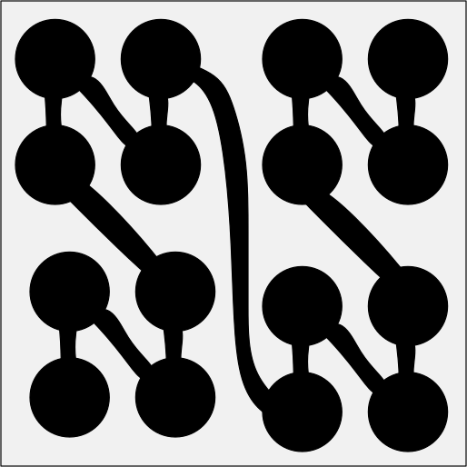

3.3 Mengen, die so groß wie ./wly/03/03-sets-like-R.wly:2:11$\R$./wly/03/03-sets-like-R.wly:2:35 sind./wly/03/03-sets-like-R.wly:2:39
Im letzten Kapitel haben wir viele Mengen./wly/03/03-sets-like-R.wly:4:5 kennengelernt, die abzählbar unendlich sind, also./wly/03/03-sets-like-R.wly:5:5 gleichmächtig mit ./wly/03/03-sets-like-R.wly:6:5$\N$./wly/03/03-sets-like-R.wly:6:23../wly/03/03-sets-like-R.wly:6:27 Hier werden wir nun erkunden,./wly/03/03-sets-like-R.wly:6:27 welche Mengen gleichmächtig mit ./wly/03/03-sets-like-R.wly:7:5$\R$./wly/03/03-sets-like-R.wly:7:37 sind. In der./wly/03/03-sets-like-R.wly:7:41 mathematischen Fachsprache sagt man: sie haben die./wly/03/03-sets-like-R.wly:8:5 ./wly/03/03-sets-like-R.wly:9:5Kardinalität des Kontinuums./wly/03/03-sets-like-R.wly:9:6../wly/03/03-sets-like-R.wly:9:34 Das Wort ./wly/03/03-sets-like-R.wly:9:34Kardinalität./wly/03/03-sets-like-R.wly:9:46 ./wly/03/03-sets-like-R.wly:9:59 steht hier für ./wly/03/03-sets-like-R.wly:10:5Anzahl der Elemente./wly/03/03-sets-like-R.wly:10:21 (bzw. den./wly/03/03-sets-like-R.wly:10:41 Größenbegriff bei unendlichen Mengen), und ./wly/03/03-sets-like-R.wly:11:5Kontinuum./wly/03/03-sets-like-R.wly:11:49 ./wly/03/03-sets-like-R.wly:11:59 steht für ./wly/03/03-sets-like-R.wly:12:5die reellen Zahlen./wly/03/03-sets-like-R.wly:12:16../wly/03/03-sets-like-R.wly:12:35 Im nächsten Kapitel./wly/03/03-sets-like-R.wly:12:35 werden wir zeigen, dass es "echt mehr" reelle Zahlen./wly/03/03-sets-like-R.wly:13:5 gibt als natürliche; dass also ./wly/03/03-sets-like-R.wly:14:5$\R$./wly/03/03-sets-like-R.wly:14:36 nicht abzählbar./wly/03/03-sets-like-R.wly:14:40 ist. Aber eins nach dem anderen../wly/03/03-sets-like-R.wly:15:5
Beobachtung 3.3.1./wly/03/03-sets-like-R.wly:17:5 ./wly/03/03-sets-like-R.wly:17:5 Es gilt ./wly/03/03-sets-like-R.wly:18:9$\R \approx (0,1)$./wly/03/03-sets-like-R.wly:18:17,./wly/03/03-sets-like-R.wly:18:35 wobei ./wly/03/03-sets-like-R.wly:18:35$(0,1)$./wly/03/03-sets-like-R.wly:18:43 das offene./wly/03/03-sets-like-R.wly:18:50 Einheitsintervall ist../wly/03/03-sets-like-R.wly:19:9
Beweis. Wir können eine Bijektion explizit hinschreiben:./wly/03/03-sets-like-R.wly:22:9
$$
\begin{align*}
f : \R&\rightarrow (0,1) \\ x&\mapsto
\frac{e^x}{e^x + 1}
\end{align*}
$$./wly/03/03-sets-like-R.wly:24:9
Mit etwas reeller Analysis kann man nun zeigen:./wly/03/03-sets-like-R.wly:29:9
-
$f$./wly/03/03-sets-like-R.wly:33:17 ist stetig../wly/03/03-sets-like-R.wly:33:20
-
$f$./wly/03/03-sets-like-R.wly:36:17 ist streng monoton (z.B. weil ./wly/03/03-sets-like-R.wly:36:20$f'(x) \gt 0$./wly/03/03-sets-like-R.wly:36:51 ./wly/03/03-sets-like-R.wly:36:64 gilt)../wly/03/03-sets-like-R.wly:37:17
-
$\lim_{x \rightarrow -\infty} f(x) = 0$./wly/03/03-sets-like-R.wly:40:17 und./wly/03/03-sets-like-R.wly:40:56 ./wly/03/03-sets-like-R.wly:41:17$\lim_{x \rightarrow \infty} f(x) = 1$./wly/03/03-sets-like-R.wly:41:17 ../wly/03/03-sets-like-R.wly:41:55
Und somit ist ./wly/03/03-sets-like-R.wly:43:9$f$./wly/03/03-sets-like-R.wly:43:23 eine Bijektion von ./wly/03/03-sets-like-R.wly:43:26$\R$./wly/03/03-sets-like-R.wly:43:46 auf den./wly/03/03-sets-like-R.wly:43:50 Wertebereich von ./wly/03/03-sets-like-R.wly:44:9$f$./wly/03/03-sets-like-R.wly:44:26,./wly/03/03-sets-like-R.wly:44:29 also ./wly/03/03-sets-like-R.wly:44:29$(0,1)$./wly/03/03-sets-like-R.wly:44:36../wly/03/03-sets-like-R.wly:44:43A\(\square\)
Übungsaufgabe 3.3.1./wly/03/03-sets-like-R.wly:46:5 ./wly/03/03-sets-like-R.wly:46:5 Zeigen Sie ./wly/03/03-sets-like-R.wly:47:9$\R \approx \R^+$./wly/03/03-sets-like-R.wly:47:20../wly/03/03-sets-like-R.wly:47:37
Übungsaufgabe 3.3.2./wly/03/03-sets-like-R.wly:49:5 ./wly/03/03-sets-like-R.wly:49:5 Zeigen Sie, dass ./wly/03/03-sets-like-R.wly:50:9$\R_0^+ \approx \R^+$./wly/03/03-sets-like-R.wly:50:26 gilt. Sie./wly/03/03-sets-like-R.wly:50:47 müssen "die 0 verschwinden lassen"../wly/03/03-sets-like-R.wly:51:9
Übungsaufgabe 3.3.3./wly/03/03-sets-like-R.wly:53:5 ./wly/03/03-sets-like-R.wly:53:5 Zeigen Sie, dass ./wly/03/03-sets-like-R.wly:55:9$[0,1]$./wly/03/03-sets-like-R.wly:55:26,./wly/03/03-sets-like-R.wly:55:33 ./wly/03/03-sets-like-R.wly:55:33$[0,1)$./wly/03/03-sets-like-R.wly:55:35,./wly/03/03-sets-like-R.wly:55:42 ./wly/03/03-sets-like-R.wly:55:42$(0,1]$./wly/03/03-sets-like-R.wly:55:44 und ./wly/03/03-sets-like-R.wly:55:51$(0,1)$./wly/03/03-sets-like-R.wly:55:56 ./wly/03/03-sets-like-R.wly:55:63 alle gleichmächtig sind../wly/03/03-sets-like-R.wly:56:9
Wir führen nun eine neue Notation ein: ./wly/03/03-sets-like-R.wly:58:5$\{0,1\}^{\N}$./wly/03/03-sets-like-R.wly:58:44 ./wly/03/03-sets-like-R.wly:58:58 ist die Menge aller unendlichen Folgen von ./wly/03/03-sets-like-R.wly:59:5$0$./wly/03/03-sets-like-R.wly:59:48 und./wly/03/03-sets-like-R.wly:59:51 ./wly/03/03-sets-like-R.wly:60:5$1$./wly/03/03-sets-like-R.wly:60:5../wly/03/03-sets-like-R.wly:60:8 Formal gesehen bezeichnet man für zwei Mengen ./wly/03/03-sets-like-R.wly:60:8$A$./wly/03/03-sets-like-R.wly:60:56 ./wly/03/03-sets-like-R.wly:60:59 und ./wly/03/03-sets-like-R.wly:61:5$B$./wly/03/03-sets-like-R.wly:61:9 mit der Notation ./wly/03/03-sets-like-R.wly:61:12$A^B$./wly/03/03-sets-like-R.wly:61:30 die Menge aller./wly/03/03-sets-like-R.wly:61:35 Funktionen ./wly/03/03-sets-like-R.wly:62:5$\phi : B \rightarrow A$./wly/03/03-sets-like-R.wly:62:16../wly/03/03-sets-like-R.wly:62:40 Ein Element aus./wly/03/03-sets-like-R.wly:62:40 ./wly/03/03-sets-like-R.wly:63:5$\{0,1\}^{\N}$./wly/03/03-sets-like-R.wly:63:5 wäre demnach eien Funktion./wly/03/03-sets-like-R.wly:63:19 ./wly/03/03-sets-like-R.wly:64:5$\phi : \N \rightarrow \{0,1\}$./wly/03/03-sets-like-R.wly:64:5../wly/03/03-sets-like-R.wly:64:36 Diese Objekte./wly/03/03-sets-like-R.wly:64:36 entsprechen genau den unendlichen ./wly/03/03-sets-like-R.wly:65:5$0/1$./wly/03/03-sets-like-R.wly:65:39-Folgen,./wly/03/03-sets-like-R.wly:65:44 ./wly/03/03-sets-like-R.wly:65:44 nämlich ./wly/03/03-sets-like-R.wly:66:5$\phi(0)\phi(1)\phi(2)\phi(3)\dots$./wly/03/03-sets-like-R.wly:66:13../wly/03/03-sets-like-R.wly:66:48 Der./wly/03/03-sets-like-R.wly:66:48 Unterschied ist rein syntaktisch. Es ist allerdings./wly/03/03-sets-like-R.wly:67:5 bequemer, sich ein ./wly/03/03-sets-like-R.wly:68:5$\phi \in \{0,1\}^{\N}$./wly/03/03-sets-like-R.wly:68:24 als./wly/03/03-sets-like-R.wly:68:47 unendliche ./wly/03/03-sets-like-R.wly:69:5$0/1$./wly/03/03-sets-like-R.wly:69:16-Folge./wly/03/03-sets-like-R.wly:69:21 vorzustellen../wly/03/03-sets-like-R.wly:69:21
Theorem 3.3.2./wly/03/03-sets-like-R.wly:71:5 ./wly/03/03-sets-like-R.wly:71:5 ./wly/03/03-sets-like-R.wly:73:9$\R \approx \{0,1\}^{\N}$./wly/03/03-sets-like-R.wly:73:9../wly/03/03-sets-like-R.wly:73:34
Beweis. Die Beweisidee ist einfach, allerdings gehen erst./wly/03/03-sets-like-R.wly:76:9 einmal ein paar Dinge schief, die man wieder flicken./wly/03/03-sets-like-R.wly:77:9 muss. Da laut ./wly/03/03-sets-like-R.wly:78:9Übungsaufgabe 3.3.3 ./wly/03/03-sets-like-R.wly:79:9$\R \approx [0,1)$./wly/03/03-sets-like-R.wly:79:42 ./wly/03/03-sets-like-R.wly:79:60 gilt, reicht es, eine Bijektion./wly/03/03-sets-like-R.wly:80:9 ./wly/03/03-sets-like-R.wly:81:9$f : [0,1) \rightarrow \{0,1\}^{\N}$./wly/03/03-sets-like-R.wly:81:9 zu konstruieren../wly/03/03-sets-like-R.wly:81:45 So geht's: Jede Zahl ./wly/03/03-sets-like-R.wly:82:9$0 \leq x \lt 1$./wly/03/03-sets-like-R.wly:82:30 lässt sich als./wly/03/03-sets-like-R.wly:82:46 (unendliche) Binärzahl ./wly/03/03-sets-like-R.wly:83:9$(x)_2$./wly/03/03-sets-like-R.wly:83:32 schreiben,./wly/03/03-sets-like-R.wly:83:39 beispielsweise./wly/03/03-sets-like-R.wly:84:9
$$
\begin{align*}
\pfrac{1}{3}_2 = 0.01010101\dots
\end{align*}
$$./wly/03/03-sets-like-R.wly:86:9
Wir erhalten nun unsere unendliche ./wly/03/03-sets-like-R.wly:90:9$0/1$./wly/03/03-sets-like-R.wly:90:44-Folge,./wly/03/03-sets-like-R.wly:90:49 indem./wly/03/03-sets-like-R.wly:90:49 wir die führende Null und den Punkt abschneiden:./wly/03/03-sets-like-R.wly:91:9 ./wly/03/03-sets-like-R.wly:92:9$f(1/3) = 010101\dots$./wly/03/03-sets-like-R.wly:92:9../wly/03/03-sets-like-R.wly:92:31 Das geht für jede Zahl in./wly/03/03-sets-like-R.wly:92:31 ./wly/03/03-sets-like-R.wly:93:9$[0,1)$./wly/03/03-sets-like-R.wly:93:9:./wly/03/03-sets-like-R.wly:93:16
$f(1/2) = 100000\dots$./wly/03/03-sets-like-R.wly:95:9,./wly/03/03-sets-like-R.wly:95:31 ./wly/03/03-sets-like-R.wly:95:31$f(1/4) = 010000\dots$./wly/03/03-sets-like-R.wly:95:33../wly/03/03-sets-like-R.wly:95:55 Die./wly/03/03-sets-like-R.wly:95:55 konstruierte Funktion ./wly/03/03-sets-like-R.wly:96:9$f$./wly/03/03-sets-like-R.wly:96:31 ist injektiv: zwei./wly/03/03-sets-like-R.wly:96:34 verschiedene ./wly/03/03-sets-like-R.wly:97:9$0 \leq x \lt y \lt 1$./wly/03/03-sets-like-R.wly:97:22 haben./wly/03/03-sets-like-R.wly:97:44 verschiedene Binärdarstellung und werden somit zu zwie./wly/03/03-sets-like-R.wly:98:9 verschiedenen ./wly/03/03-sets-like-R.wly:99:9$0/1$./wly/03/03-sets-like-R.wly:99:23-Folgen../wly/03/03-sets-like-R.wly:99:28 Leider ist sie nicht./wly/03/03-sets-like-R.wly:99:28 surjektiv: die Binärdarstellung einer reellen Zahl./wly/03/03-sets-like-R.wly:100:9 hört nie mit ./wly/03/03-sets-like-R.wly:101:9$11111\dots$./wly/03/03-sets-like-R.wly:101:22 auf. Statt./wly/03/03-sets-like-R.wly:101:34 ./wly/03/03-sets-like-R.wly:102:9$0.001111111\dots$./wly/03/03-sets-like-R.wly:102:9 würden wir einfach ./wly/03/03-sets-like-R.wly:102:27$0.0100000\dots$./wly/03/03-sets-like-R.wly:102:47 ./wly/03/03-sets-like-R.wly:102:63 schreiben. Das entspricht dem Phänomen in der./wly/03/03-sets-like-R.wly:103:9 Dezimalschreibweise, dass ./wly/03/03-sets-like-R.wly:104:9$0.99999999\dots$./wly/03/03-sets-like-R.wly:104:35 und./wly/03/03-sets-like-R.wly:104:52 ./wly/03/03-sets-like-R.wly:105:9$1.000000\dots$./wly/03/03-sets-like-R.wly:105:9 die gleiche Zahl repräsentieren. Die./wly/03/03-sets-like-R.wly:105:24 "kanonische" Repräsentierung ist allerdings immer die./wly/03/03-sets-like-R.wly:106:9 mit einem unendlichen Schweif an Nullen, nie mit./wly/03/03-sets-like-R.wly:107:9 Neunen (oder in Binär: Einsen). Definieren wir also./wly/03/03-sets-like-R.wly:108:9 ./wly/03/03-sets-like-R.wly:109:9$X$./wly/03/03-sets-like-R.wly:109:9,./wly/03/03-sets-like-R.wly:109:12 die Menge aller ./wly/03/03-sets-like-R.wly:109:12$0/1$./wly/03/03-sets-like-R.wly:109:30-Folgen./wly/03/03-sets-like-R.wly:109:35 mit einem./wly/03/03-sets-like-R.wly:109:35 unendlichen Schweif an Einsen:./wly/03/03-sets-like-R.wly:110:9
$$
\begin{align*}
X := \{ a_1 a_2 a_3 \dots \in \{0,1\}^{\N} \ | \
\exists\ n \geq 1: a_i = 1 \ \forall i \geq n\}
\end{align*}
$$./wly/03/03-sets-like-R.wly:112:9
Unsere Funktion ./wly/03/03-sets-like-R.wly:117:9$f$./wly/03/03-sets-like-R.wly:117:25 ist eine Bijektion von ./wly/03/03-sets-like-R.wly:117:28$[0,1)$./wly/03/03-sets-like-R.wly:117:52 ./wly/03/03-sets-like-R.wly:117:59 nach ./wly/03/03-sets-like-R.wly:118:9$\{0,1\}^{\N} \setminus X$./wly/03/03-sets-like-R.wly:118:14../wly/03/03-sets-like-R.wly:118:40 Um daraus eine./wly/03/03-sets-like-R.wly:118:40 Bijektion ./wly/03/03-sets-like-R.wly:119:9$g : [0,1) \rightarrow \{0,1\}^{\N}$./wly/03/03-sets-like-R.wly:119:19 zu./wly/03/03-sets-like-R.wly:119:55 bauen, müssen wir die Lücken füllen, die ./wly/03/03-sets-like-R.wly:120:9$f$./wly/03/03-sets-like-R.wly:120:50 lässt -./wly/03/03-sets-like-R.wly:120:53 also ./wly/03/03-sets-like-R.wly:121:9$X$./wly/03/03-sets-like-R.wly:121:14../wly/03/03-sets-like-R.wly:121:17
Übungsaufgabe 3.3.4./wly/03/03-sets-like-R.wly:123:9 ./wly/03/03-sets-like-R.wly:123:9 Sei./wly/03/03-sets-like-R.wly:124:13 ./wly/03/03-sets-like-R.wly:125:13$Y := \{ a_1 a_2 a_3 \dots \in \{0,1\}^{\N} | \ \exists\ n \geq 1: a_i = 0 \ \forall i \geq n\}$./wly/03/03-sets-like-R.wly:125:13 ./wly/03/03-sets-like-R.wly:126:61 die Menge aller ./wly/03/03-sets-like-R.wly:127:13$0/1$./wly/03/03-sets-like-R.wly:127:29-Folgen./wly/03/03-sets-like-R.wly:127:34 mit einem unendlichen./wly/03/03-sets-like-R.wly:127:34 Schweif von Nullen. Offensichtlich gilt ./wly/03/03-sets-like-R.wly:128:13$X \approx Y$./wly/03/03-sets-like-R.wly:128:53../wly/03/03-sets-like-R.wly:128:66 ./wly/03/03-sets-like-R.wly:128:66 Zeigen Sie, dass ./wly/03/03-sets-like-R.wly:129:13$Y \approx X \cup Y$./wly/03/03-sets-like-R.wly:129:30 gilt../wly/03/03-sets-like-R.wly:129:50
Übungsaufgabe 3.3.5./wly/03/03-sets-like-R.wly:131:9 ./wly/03/03-sets-like-R.wly:131:9 Verwenden Sie die vorherige Übungsaufgabe, um ./wly/03/03-sets-like-R.wly:132:13$Y$./wly/03/03-sets-like-R.wly:132:59 zu./wly/03/03-sets-like-R.wly:132:62 verdoppeln und somit eine Bijektion von./wly/03/03-sets-like-R.wly:133:13 ./wly/03/03-sets-like-R.wly:134:13$[0,1) \rightarrow \{0,1\}^{\N}$./wly/03/03-sets-like-R.wly:134:13 zu konstruieren../wly/03/03-sets-like-R.wly:134:45 Vielleicht hilft Ihnen folgendes Bild:./wly/03/03-sets-like-R.wly:135:13
 public/img/infinite-sets/interval-sequences-fill-the-gaps.svg
public/img/infinite-sets/interval-sequences-fill-the-gaps.svg
A\(\square\)
Als nächstes zeigen wir, dass ./wly/03/03-sets-like-R.wly:141:5$\R \approx \R^2$./wly/03/03-sets-like-R.wly:141:35 gilt../wly/03/03-sets-like-R.wly:141:52 Dies ist schon erstaunlich: der Zahlenstrahl und die./wly/03/03-sets-like-R.wly:142:5 zweidimensionale Ebene sollen also gleichviele./wly/03/03-sets-like-R.wly:143:5 Elemente haben!./wly/03/03-sets-like-R.wly:144:5
Theorem 3.3.3./wly/03/03-sets-like-R.wly:146:5 ./wly/03/03-sets-like-R.wly:146:5 Es gilt ./wly/03/03-sets-like-R.wly:148:9$\R^2 \approx \R$./wly/03/03-sets-like-R.wly:148:17../wly/03/03-sets-like-R.wly:148:34
Beweis. Mithilfe von ./wly/03/03-sets-like-R.wly:151:9Theorem 3.3.2 geht das./wly/03/03-sets-like-R.wly:151:9 ganz einfach. Da ./wly/03/03-sets-like-R.wly:152:9$\R \approx \{0,1\}^\N$./wly/03/03-sets-like-R.wly:152:26 gilt, reicht./wly/03/03-sets-like-R.wly:152:49 es nämlich, eine Bijektion./wly/03/03-sets-like-R.wly:153:9 ./wly/03/03-sets-like-R.wly:154:9$\{0,1\}^\N \times \{0,1\}^\N \rightarrow \{0,1\}^\N$./wly/03/03-sets-like-R.wly:154:9 ./wly/03/03-sets-like-R.wly:154:62 zu konstruieren. Ein Element von./wly/03/03-sets-like-R.wly:155:9 ./wly/03/03-sets-like-R.wly:156:9$\{0,1\}^\N \times \{0,1\}^\N$./wly/03/03-sets-like-R.wly:156:9 besteht aus zwei./wly/03/03-sets-like-R.wly:156:39 unendlichen ./wly/03/03-sets-like-R.wly:157:9$0/1$./wly/03/03-sets-like-R.wly:157:21-Folgen:./wly/03/03-sets-like-R.wly:157:26
$$
\begin{align*}
(a,b) = (a_1 a_2 a_3 \dots, b_1 b_2 b_3 \dots) \ .
\end{align*}
$$./wly/03/03-sets-like-R.wly:159:9
Wir müssen dieses Folgenpaar nun in ./wly/03/03-sets-like-R.wly:163:9eine./wly/03/03-sets-like-R.wly:163:46 Folge./wly/03/03-sets-like-R.wly:163:51 codieren. Ganz klar:./wly/03/03-sets-like-R.wly:164:9
$$
\begin{align*}
(a_1 a_2 a_3 \dots, b_1 b_2 b_3 \dots) \mapsto (a_1 b_1
a_2 b_2 a_3 b_3 \dots)
\end{align*}
$$./wly/03/03-sets-like-R.wly:166:9
Dies ist die gewünschte Bijektion./wly/03/03-sets-like-R.wly:171:9 ./wly/03/03-sets-like-R.wly:172:9$\{0,1\}^\N \times \{0,1\}^\N \rightarrow \{0,1\}^\N$./wly/03/03-sets-like-R.wly:172:9../wly/03/03-sets-like-R.wly:172:62A\(\square\)
Aus der Funktion./wly/03/03-sets-like-R.wly:174:5 ./wly/03/03-sets-like-R.wly:175:5$f: \{0,1\}^{\N} \times \{0,1\}^{\N} \mapsto \{0,1\}^{\N}$./wly/03/03-sets-like-R.wly:175:5 ./wly/03/03-sets-like-R.wly:176:18 aus ./wly/03/03-sets-like-R.wly:177:5Theorem 3.3.3 können wir eine./wly/03/03-sets-like-R.wly:177:5 (fast) bijektive Funktion./wly/03/03-sets-like-R.wly:178:5 ./wly/03/03-sets-like-R.wly:179:5$[0,1) \times [0,1) \rightarrow [0,1)$./wly/03/03-sets-like-R.wly:179:5 bauen. Wir./wly/03/03-sets-like-R.wly:179:43 nehmen zwei Zahlen ./wly/03/03-sets-like-R.wly:180:5$0 \leq x,y \lt 1$./wly/03/03-sets-like-R.wly:180:24,./wly/03/03-sets-like-R.wly:180:42 schreiben sie./wly/03/03-sets-like-R.wly:180:42 in Binärdarstellung und vereinigen sie dann per./wly/03/03-sets-like-R.wly:181:5 Reißverschlussverfahren zu einer Zahl, z.B../wly/03/03-sets-like-R.wly:182:5
$$
\begin{align*}
\left(\frac{1}{3}, \frac{1}{2}\right) =
(0.010\overline{10}\dots, 0.1)_2 \mapsto (010101\dots, 100000\dots)
\mapsto (01100010001000\dots) \mapsto (0.01\overline{1000})_2 =: z\ .
\end{align*}
$$./wly/03/03-sets-like-R.wly:184:5
Um herauszufinden, um welche Zahl es sich bei ./wly/03/03-sets-like-R.wly:190:5$z$./wly/03/03-sets-like-R.wly:190:51 ./wly/03/03-sets-like-R.wly:190:54 handelt, multiplizieren wir sie mit 64:./wly/03/03-sets-like-R.wly:191:5
$$
\begin{align*}
\end{align*}
$$./wly/03/03-sets-like-R.wly:193:5
Sie erreicht alle Zahlen bis auf diejenigen mit einem./wly/03/03-sets-like-R.wly:196:5 unendlichen Schweif von Einsen. Sie ist hochgradig./wly/03/03-sets-like-R.wly:197:5 nichtstetig. Dennoch können wir versuchen, sie zu./wly/03/03-sets-like-R.wly:198:5 plotten:./wly/03/03-sets-like-R.wly:199:5
 public/img/infinite-sets/bijection-square-interval.png
public/img/infinite-sets/bijection-square-interval.png
Als nächstes versuche ich, die Umkehrfunktion./wly/03/03-sets-like-R.wly:212:5 ./wly/03/03-sets-like-R.wly:213:5$f^{-1} : [0,1) \mapsto [0,1) \times [0,1)$./wly/03/03-sets-like-R.wly:213:5 zu./wly/03/03-sets-like-R.wly:213:48 skizzieren. Das ist etwas schwierig, weil ./wly/03/03-sets-like-R.wly:214:5$f^{-1}$./wly/03/03-sets-like-R.wly:214:47 ./wly/03/03-sets-like-R.wly:214:55 nicht stetig ist. Was macht ./wly/03/03-sets-like-R.wly:215:5$f^{-1}(z)$./wly/03/03-sets-like-R.wly:215:33?./wly/03/03-sets-like-R.wly:215:44 Sie./wly/03/03-sets-like-R.wly:215:44 betrachtet ./wly/03/03-sets-like-R.wly:216:5$z \in [0,1)$./wly/03/03-sets-like-R.wly:216:16 in Binärdarstellung und./wly/03/03-sets-like-R.wly:216:29 dröselt dann die unendlich vielen Nachkommastellen./wly/03/03-sets-like-R.wly:217:5 auf. Die ungeraden bilden ./wly/03/03-sets-like-R.wly:218:5$x$./wly/03/03-sets-like-R.wly:218:31,./wly/03/03-sets-like-R.wly:218:34 die geraden bilden ./wly/03/03-sets-like-R.wly:218:34$y$./wly/03/03-sets-like-R.wly:218:55../wly/03/03-sets-like-R.wly:218:58 ./wly/03/03-sets-like-R.wly:218:58 Beispielsweise für ./wly/03/03-sets-like-R.wly:219:5$z = 1/7$./wly/03/03-sets-like-R.wly:219:24 gilt./wly/03/03-sets-like-R.wly:219:33
$$
\begin{align*}
\frac{1}{7} = (0.001001\overline{001})_2 \mapsto
001001001001\dots \mapsto (010010\dots, 001001\dots) \mapsto (
(0.\overline{010})_2, (0.\overline{001})) = \left(\frac{2}{7},
\frac{1}{7}\right) \ ,
\end{align*}
$$./wly/03/03-sets-like-R.wly:221:5
also ./wly/03/03-sets-like-R.wly:228:5$f^{-1}(1/7) = (2/7, 1/7)$./wly/03/03-sets-like-R.wly:228:10../wly/03/03-sets-like-R.wly:228:36
Beobachtung 3.3.4./wly/03/03-sets-like-R.wly:230:5 ./wly/03/03-sets-like-R.wly:230:5 Die Funktion ./wly/03/03-sets-like-R.wly:231:9$f^{-1}$./wly/03/03-sets-like-R.wly:231:22 bildet./wly/03/03-sets-like-R.wly:231:30
-
$\left[0,\frac{1}{4}\right)$./wly/03/03-sets-like-R.wly:235:17 auf./wly/03/03-sets-like-R.wly:235:45 ./wly/03/03-sets-like-R.wly:236:17$\left[0,\frac{1}{2}\right) \times \left[0,\frac{1}{2}\right)$./wly/03/03-sets-like-R.wly:236:17 ./wly/03/03-sets-like-R.wly:237:44 ab,./wly/03/03-sets-like-R.wly:238:17
-
$\left[\frac{1}{4},\frac{1}{2}\right)$./wly/03/03-sets-like-R.wly:241:17 auf./wly/03/03-sets-like-R.wly:241:55 ./wly/03/03-sets-like-R.wly:242:17$\left[0,\frac{1}{2}\right) \times \left[\frac{1}{2},1\right)$./wly/03/03-sets-like-R.wly:242:17,./wly/03/03-sets-like-R.wly:243:44
-
$\left[\frac{1}{2},\frac{3}{4}\right)$./wly/03/03-sets-like-R.wly:246:17 auf./wly/03/03-sets-like-R.wly:246:55 ./wly/03/03-sets-like-R.wly:247:17$\left[\frac{1}{2},1\right) \times \left[0,\frac{1}{2}\right)$./wly/03/03-sets-like-R.wly:247:17 ./wly/03/03-sets-like-R.wly:248:44 und./wly/03/03-sets-like-R.wly:249:17
-
$\left[\frac{3}{4},1\right)$./wly/03/03-sets-like-R.wly:252:17 auf./wly/03/03-sets-like-R.wly:252:45 ./wly/03/03-sets-like-R.wly:253:17$\left[\frac{1}{2},1\right) \times \left[\frac{1}{2},1\right)$./wly/03/03-sets-like-R.wly:253:17../wly/03/03-sets-like-R.wly:254:44
Beweis. Wir zeigen den ersten Punkt. Sei ./wly/03/03-sets-like-R.wly:257:9$0 \leq z \lt 1/2$./wly/03/03-sets-like-R.wly:257:42 ./wly/03/03-sets-like-R.wly:257:60 und ./wly/03/03-sets-like-R.wly:258:9$(x,y) = f^{-1}(z)$./wly/03/03-sets-like-R.wly:258:13../wly/03/03-sets-like-R.wly:258:32 Dann hat ./wly/03/03-sets-like-R.wly:258:32$z$./wly/03/03-sets-like-R.wly:258:43 die./wly/03/03-sets-like-R.wly:258:46 Binärdarstellung ./wly/03/03-sets-like-R.wly:259:9$z = (0.00z_3z_4z_5\dots)$./wly/03/03-sets-like-R.wly:259:26../wly/03/03-sets-like-R.wly:259:52 Die./wly/03/03-sets-like-R.wly:259:52 ersten beiden Bits nach dem Komma sind ./wly/03/03-sets-like-R.wly:260:9$0$./wly/03/03-sets-like-R.wly:260:48,./wly/03/03-sets-like-R.wly:260:51 und somit./wly/03/03-sets-like-R.wly:260:51 sind die jeweils ersten Bits von ./wly/03/03-sets-like-R.wly:261:9$x$./wly/03/03-sets-like-R.wly:261:42 und ./wly/03/03-sets-like-R.wly:261:45$y$./wly/03/03-sets-like-R.wly:261:50 auch 0,./wly/03/03-sets-like-R.wly:261:53 was ./wly/03/03-sets-like-R.wly:262:9$x,y \lt 1/2$./wly/03/03-sets-like-R.wly:262:13 bedeutet. Punkt 2 bis 4 folgen aus./wly/03/03-sets-like-R.wly:262:26 ähnlichen Überlegungen../wly/03/03-sets-like-R.wly:263:9A\(\square\)
Wenn wir also ./wly/03/03-sets-like-R.wly:265:5$z$./wly/03/03-sets-like-R.wly:265:19 von ./wly/03/03-sets-like-R.wly:265:22$0$./wly/03/03-sets-like-R.wly:265:27 nach ./wly/03/03-sets-like-R.wly:265:30$1$./wly/03/03-sets-like-R.wly:265:36 wandern lassen,./wly/03/03-sets-like-R.wly:265:39 dann bewegt sich ./wly/03/03-sets-like-R.wly:266:5$f^{-1}(z)$./wly/03/03-sets-like-R.wly:266:22 von links unten nach./wly/03/03-sets-like-R.wly:266:33 links oben, springt dann nach rechts unten und bewegt./wly/03/03-sets-like-R.wly:267:5 sich nach rechts oben. Grafisch stelle ich das wie./wly/03/03-sets-like-R.wly:268:5 folgt (und etwas unbeholfen) dar:./wly/03/03-sets-like-R.wly:269:5
 public/img/infinite-sets/interval-to-square.svg
public/img/infinite-sets/interval-to-square.svg
Beachten Sie, dass die Verbindungslinien zwischen den./wly/03/03-sets-like-R.wly:276:5 Kreisen Sprünge sind, also Unstetigkeitsstellen von./wly/03/03-sets-like-R.wly:277:5 ./wly/03/03-sets-like-R.wly:278:5$f^{-1}$./wly/03/03-sets-like-R.wly:278:5../wly/03/03-sets-like-R.wly:278:13 Innerhalb der Viertelintervalle (also z.B../wly/03/03-sets-like-R.wly:278:13 innerhalb von ./wly/03/03-sets-like-R.wly:279:5$\left[\frac{1}{4}, \frac{1}{2}\right)$./wly/03/03-sets-like-R.wly:279:19 ./wly/03/03-sets-like-R.wly:279:58 ) sieht der Graph wieder ganz ähnlich aus. Hier sehen./wly/03/03-sets-like-R.wly:280:5 Sie die ersten paar Schritte dieser "Verfeinerung"../wly/03/03-sets-like-R.wly:281:5
 public/img/infinite-sets/interval-to-square-animation/figures-01-01.svg
public/img/infinite-sets/interval-to-square-animation/figures-01-01.svg
public/img/infinite-sets/interval-to-square-animation/figures-01-02.svg
public/img/infinite-sets/interval-to-square-animation/figures-01-03.svg
 public/img/infinite-sets/interval-to-square-animation/figures-01-04.svg
public/img/infinite-sets/interval-to-square-animation/figures-01-04.svg
Wir wissen nun, dass ./wly/03/03-sets-like-R.wly:290:5$\R \approx \R^2$./wly/03/03-sets-like-R.wly:290:26 gilt. Ebenso./wly/03/03-sets-like-R.wly:290:43 können wir ./wly/03/03-sets-like-R.wly:291:5$\R \approx \R^{k}$./wly/03/03-sets-like-R.wly:291:16 für jedes ./wly/03/03-sets-like-R.wly:291:35$k \in \N^+$./wly/03/03-sets-like-R.wly:291:46 ./wly/03/03-sets-like-R.wly:291:58 zeigen. Wie sieht es aber mit ./wly/03/03-sets-like-R.wly:292:5$\R^{\N}$./wly/03/03-sets-like-R.wly:292:35 aus? Das ist./wly/03/03-sets-like-R.wly:292:44 die Menge aller Funktionen ./wly/03/03-sets-like-R.wly:293:5$\phi: \N \rightarrow \R$./wly/03/03-sets-like-R.wly:293:32 ./wly/03/03-sets-like-R.wly:293:57 oder, etwas freundlicher formuliert, die Menge aller./wly/03/03-sets-like-R.wly:294:5 unendlichen Folgen reeller Zahlen:./wly/03/03-sets-like-R.wly:295:5 ./wly/03/03-sets-like-R.wly:296:5$r_1, r_2, r_3, \dots$./wly/03/03-sets-like-R.wly:296:5../wly/03/03-sets-like-R.wly:296:27
Theorem 3.3.5./wly/03/03-sets-like-R.wly:298:5 ./wly/03/03-sets-like-R.wly:298:5 ./wly/03/03-sets-like-R.wly:299:9$\R \approx \R^{\N}$./wly/03/03-sets-like-R.wly:299:9../wly/03/03-sets-like-R.wly:299:29
Beweis. Da ./wly/03/03-sets-like-R.wly:302:9$\R \approx \cuben$./wly/03/03-sets-like-R.wly:302:12 gilt, reicht es, zu zeigen,./wly/03/03-sets-like-R.wly:302:31 dass./wly/03/03-sets-like-R.wly:303:9
$$
\begin{align*}
\cuben \approx \left(\cuben\right)^{\N}
\end{align*}
$$./wly/03/03-sets-like-R.wly:305:9
gilt. Interpretieren wir die rechte Seite: das sind./wly/03/03-sets-like-R.wly:309:9 unendliche Folgen von "Dingern", und jedes Ding ist./wly/03/03-sets-like-R.wly:310:9 wiederum eine unendliche Folge von 0/1. Wir können uns./wly/03/03-sets-like-R.wly:311:9 jedes Ding als (unendliche) Zeile vorstellen und./wly/03/03-sets-like-R.wly:312:9 erhalten somit eine in beiden Richtungen unendliche./wly/03/03-sets-like-R.wly:313:9 Tabelle. Wenn also ./wly/03/03-sets-like-R.wly:314:9$r_i$./wly/03/03-sets-like-R.wly:314:28 eine unendliche ./wly/03/03-sets-like-R.wly:314:33$0/1$./wly/03/03-sets-like-R.wly:314:50-Folge./wly/03/03-sets-like-R.wly:314:55 ./wly/03/03-sets-like-R.wly:314:55 ist und und ./wly/03/03-sets-like-R.wly:315:9$r_{i,j}$./wly/03/03-sets-like-R.wly:315:21 das ./wly/03/03-sets-like-R.wly:315:30$j$./wly/03/03-sets-like-R.wly:315:35-te./wly/03/03-sets-like-R.wly:315:38 Bit der ./wly/03/03-sets-like-R.wly:315:38$i$./wly/03/03-sets-like-R.wly:315:50-ten./wly/03/03-sets-like-R.wly:315:53 ./wly/03/03-sets-like-R.wly:315:53 Folge, dann sieht unsere Tabelle so aus:./wly/03/03-sets-like-R.wly:316:9
 public/img/infinite-sets/table-infinite-sequences.svg
public/img/infinite-sets/table-infinite-sequences.svg
Wir wollen jetzt eine Bijektion./wly/03/03-sets-like-R.wly:322:9 ./wly/03/03-sets-like-R.wly:323:9$f : \cuben \times \cuben \rightarrow \cuben$./wly/03/03-sets-like-R.wly:323:9 ./wly/03/03-sets-like-R.wly:323:54 definieren. Dafür wenden wir den gleichen Trick an wie./wly/03/03-sets-like-R.wly:324:9 in dem Beweis, dass ./wly/03/03-sets-like-R.wly:325:9$\N \approx \N \times \N$./wly/03/03-sets-like-R.wly:325:29 ist:./wly/03/03-sets-like-R.wly:325:54 wir zerlegen die Tabelle in Diagonalen und arbeiten./wly/03/03-sets-like-R.wly:326:9 jede separat ab:./wly/03/03-sets-like-R.wly:327:9
Schließlich definieren wir unsere Folge./wly/03/03-sets-like-R.wly:333:9 ./wly/03/03-sets-like-R.wly:334:9$s_1 s_2 s_3 \dots \in \cuben$./wly/03/03-sets-like-R.wly:334:9:./wly/03/03-sets-like-R.wly:334:39
 public/img/infinite-sets/table-infinite-sequences-with-s.svg
public/img/infinite-sets/table-infinite-sequences-with-s.svg
A\(\square\)
Wir haben also die Beweisidee von./wly/03/03-sets-like-R.wly:340:5 ./wly/03/03-sets-like-R.wly:341:5$\N \times \N \approx \N$./wly/03/03-sets-like-R.wly:341:5 recycelt. Diese Beobachtung./wly/03/03-sets-like-R.wly:341:30 motiviert den folgenden, etwas kurz angebundenen./wly/03/03-sets-like-R.wly:342:5 Beweis:./wly/03/03-sets-like-R.wly:343:5
Zweiter Beweis. Um zu zeigen, dass ./wly/03/03-sets-like-R.wly:347:9$\R^\N \approx \R$./wly/03/03-sets-like-R.wly:347:28 gilt, rechnen./wly/03/03-sets-like-R.wly:347:46 wir:./wly/03/03-sets-like-R.wly:348:9
$$
\begin{align*}
\R^\N &\approx \left(\cuben\right)^{\N} \\
&\approx \cube^{\N \times \N} \\
&\approx \cube^{\N} \\&\approx \R \vphantom{\cube^{\N}} \ .
\end{align*}
$$./wly/03/03-sets-like-R.wly:350:9
Dürfen wir das? Dürfen wir Rechenregeln wie./wly/03/03-sets-like-R.wly:356:5 ./wly/03/03-sets-like-R.wly:357:5$\left(x^{b}\right)^c = x^{b \cdot c}$./wly/03/03-sets-like-R.wly:357:5 so einfach./wly/03/03-sets-like-R.wly:357:43 anwenden? Noch grundlegender, und das ist auch ein./wly/03/03-sets-like-R.wly:358:5 Punkt im ersten Beweis, den ich unter den Teppich./wly/03/03-sets-like-R.wly:359:5 gekehrt habe: Zwar wissen wir bereits, dass./wly/03/03-sets-like-R.wly:360:5 ./wly/03/03-sets-like-R.wly:361:5$\R \approx \cuben$./wly/03/03-sets-like-R.wly:361:5../wly/03/03-sets-like-R.wly:361:24 Folgt aber daraus bereits, dass./wly/03/03-sets-like-R.wly:361:24 ./wly/03/03-sets-like-R.wly:362:5$\R^\N \approx \left(\cuben\right)^\N$./wly/03/03-sets-like-R.wly:362:5?./wly/03/03-sets-like-R.wly:362:43 Erstens also:./wly/03/03-sets-like-R.wly:362:43 dürfen wir mit Plus, Mal und Hoch wie gewohnt rechnen?./wly/03/03-sets-like-R.wly:363:5 Und dürfen wir in den resultierenden Ausdrücken./wly/03/03-sets-like-R.wly:364:5 equipotente Mengen austauschen? Bevor wir das als./wly/03/03-sets-like-R.wly:365:5 Theorem formulieren, überlegen wir uns kurz, was denn./wly/03/03-sets-like-R.wly:366:5 die Analoga zu den arithmetischen Operationen sind. Am./wly/03/03-sets-like-R.wly:367:5 klarsten ist die Multiplikation: die./wly/03/03-sets-like-R.wly:368:5 Zahlenmultiplikation ./wly/03/03-sets-like-R.wly:369:5$a \cdot b$./wly/03/03-sets-like-R.wly:369:26 hat als./wly/03/03-sets-like-R.wly:369:37 mengentheoretisches Analog das Cartesische Produkt./wly/03/03-sets-like-R.wly:370:5 ./wly/03/03-sets-like-R.wly:371:5$A \times B$./wly/03/03-sets-like-R.wly:371:5,./wly/03/03-sets-like-R.wly:371:17 die Menge aller Paare ./wly/03/03-sets-like-R.wly:371:17$(x,y)$./wly/03/03-sets-like-R.wly:371:41 mit./wly/03/03-sets-like-R.wly:371:48 ./wly/03/03-sets-like-R.wly:372:5$x \in A, y \in B$./wly/03/03-sets-like-R.wly:372:5 . Die Exponentiation ./wly/03/03-sets-like-R.wly:372:23$a^b$./wly/03/03-sets-like-R.wly:372:45 hat als./wly/03/03-sets-like-R.wly:372:50 Analog ./wly/03/03-sets-like-R.wly:373:5$A^B$./wly/03/03-sets-like-R.wly:373:12,./wly/03/03-sets-like-R.wly:373:17 die Menge aller ./wly/03/03-sets-like-R.wly:373:17Funktionen./wly/03/03-sets-like-R.wly:373:36 ./wly/03/03-sets-like-R.wly:373:47 ./wly/03/03-sets-like-R.wly:374:5$\phi: B \rightarrow A$./wly/03/03-sets-like-R.wly:374:5../wly/03/03-sets-like-R.wly:374:28 Was ist das Analog zur./wly/03/03-sets-like-R.wly:374:28 Addition? Die Vereinigung ./wly/03/03-sets-like-R.wly:375:5$A \cup B$./wly/03/03-sets-like-R.wly:375:31 wäre zu kurz./wly/03/03-sets-like-R.wly:375:41 gegriffen, weil ja zum Beispiel./wly/03/03-sets-like-R.wly:376:5 ./wly/03/03-sets-like-R.wly:377:5$\{1,2,3\} \cup \{4,5\}$./wly/03/03-sets-like-R.wly:377:5 fünf Elemente hat,./wly/03/03-sets-like-R.wly:377:29 ./wly/03/03-sets-like-R.wly:378:5$\{1,2,3\} \cup \{1,2\}$./wly/03/03-sets-like-R.wly:378:5 aber nur drei. Das./wly/03/03-sets-like-R.wly:378:29 "richtige" Analog ist die ./wly/03/03-sets-like-R.wly:379:5disjunkte Vereinigung./wly/03/03-sets-like-R.wly:379:32 ./wly/03/03-sets-like-R.wly:379:54 ./wly/03/03-sets-like-R.wly:380:5$A \uplus B$./wly/03/03-sets-like-R.wly:380:5,./wly/03/03-sets-like-R.wly:380:17 die die Elemente von ./wly/03/03-sets-like-R.wly:380:17$B$./wly/03/03-sets-like-R.wly:380:40 erst einmal./wly/03/03-sets-like-R.wly:380:43 "markiert", um sie von denen von ./wly/03/03-sets-like-R.wly:381:5$A$./wly/03/03-sets-like-R.wly:381:38 unterscheidbar./wly/03/03-sets-like-R.wly:381:41 zu machen. Somit wäre also./wly/03/03-sets-like-R.wly:382:5 ./wly/03/03-sets-like-R.wly:383:5$\{1,2,3\} \uplus \{1,2\} = \{1,2,3,1',2'\}$./wly/03/03-sets-like-R.wly:383:5 eine./wly/03/03-sets-like-R.wly:383:49 Menge der Kardinalität 5. Formal kann man ./wly/03/03-sets-like-R.wly:384:5$A \uplus B$./wly/03/03-sets-like-R.wly:384:47 ./wly/03/03-sets-like-R.wly:384:59 so definieren;./wly/03/03-sets-like-R.wly:385:5
$$
\begin{align*}
A \uplus B := \{ (a,0) \ | \ a \in A\} \cup \{ (b,1) \ |
b \in B\} \ .
\end{align*}
$$./wly/03/03-sets-like-R.wly:387:5
Theorem 3.3.6 (mit Kardinalzahlen rechnen)./wly/03/03-sets-like-R.wly:392:5../wly/03/03-sets-like-R.wly:394:39 Es gelten die./wly/03/03-sets-like-R.wly:394:39 üblichen Rechenregeln:./wly/03/03-sets-like-R.wly:395:9
-
$A \times (B \uplus C) \approx (A \times B) \uplus (A \times C)$./wly/03/03-sets-like-R.wly:399:17,./wly/03/03-sets-like-R.wly:400:27
-
$A^{B} \times A^{C} \approx A^{B \uplus C}$./wly/03/03-sets-like-R.wly:403:17 ,./wly/03/03-sets-like-R.wly:403:60
-
$\left(A^{B}\right)^C \approx A^{B \times C}$./wly/03/03-sets-like-R.wly:406:17 ,./wly/03/03-sets-like-R.wly:406:62
sowie Kommutativität und Assoziativität von ./wly/03/03-sets-like-R.wly:408:9$\uplus$./wly/03/03-sets-like-R.wly:408:53 ./wly/03/03-sets-like-R.wly:408:61 und ./wly/03/03-sets-like-R.wly:409:9$\times$./wly/03/03-sets-like-R.wly:409:13../wly/03/03-sets-like-R.wly:409:21
Als zweites gilt, dass wir in so einem./wly/03/03-sets-like-R.wly:411:5 "mengentheoretisch-arithmetischen" Ausdruck eine Menge./wly/03/03-sets-like-R.wly:412:5 ./wly/03/03-sets-like-R.wly:413:5$A$./wly/03/03-sets-like-R.wly:413:5 durch eine äquipotente Menge ./wly/03/03-sets-like-R.wly:413:8$A'$./wly/03/03-sets-like-R.wly:413:38 ersetzen./wly/03/03-sets-like-R.wly:413:42 können:./wly/03/03-sets-like-R.wly:414:5
Theorem 3.3.7./wly/03/03-sets-like-R.wly:416:5 ./wly/03/03-sets-like-R.wly:416:5 Seien ./wly/03/03-sets-like-R.wly:418:9$A, A', B$./wly/03/03-sets-like-R.wly:418:15 Mengen und ./wly/03/03-sets-like-R.wly:418:25$A \approx A'$./wly/03/03-sets-like-R.wly:418:37../wly/03/03-sets-like-R.wly:418:51 Dann gilt./wly/03/03-sets-like-R.wly:418:51
-
$A \uplus B \approx A' \uplus B$./wly/03/03-sets-like-R.wly:422:17 (und natürlich auch./wly/03/03-sets-like-R.wly:422:49 ./wly/03/03-sets-like-R.wly:423:17$B \uplus A \approx B \uplus A'$./wly/03/03-sets-like-R.wly:423:17)../wly/03/03-sets-like-R.wly:423:49
-
$A \times B \approx A' \times B$./wly/03/03-sets-like-R.wly:426:17 (und natürlich auch./wly/03/03-sets-like-R.wly:426:49 ./wly/03/03-sets-like-R.wly:427:17$B \times A \approx B \times A'$./wly/03/03-sets-like-R.wly:427:17)../wly/03/03-sets-like-R.wly:427:49
-
$A^B \approx \left(A'\right)^{B}$./wly/03/03-sets-like-R.wly:430:17../wly/03/03-sets-like-R.wly:430:50
-
$B^A \approx B^{A'}$./wly/03/03-sets-like-R.wly:433:17../wly/03/03-sets-like-R.wly:433:37
Beachten Sie, dass ich Punkt 3 und 4 nicht zu einem./wly/03/03-sets-like-R.wly:435:5 Punkt zusammengefasst habe. Punkt 4 folgt nämlich./wly/03/03-sets-like-R.wly:436:5 nicht unmittelbar aus Punkt 3 sondern erfordert einen./wly/03/03-sets-like-R.wly:437:5 separaten Beweis../wly/03/03-sets-like-R.wly:438:5
Übungsaufgabe 3.3.6./wly/03/03-sets-like-R.wly:440:5 ./wly/03/03-sets-like-R.wly:440:5 Beweisen Sie so viele Punkte von ./wly/03/03-sets-like-R.wly:441:9Theorem 3.3.6 und ./wly/03/03-sets-like-R.wly:442:9Theorem 3.3.7, wie Sie wollen../wly/03/03-sets-like-R.wly:443:9
Hinweis../wly/03/03-sets-like-R.wly:445:10 Die Beweise sind alle nicht wirklich./wly/03/03-sets-like-R.wly:445:19 schwierig. Sie müssen nur aufpassen, dass Sie sich./wly/03/03-sets-like-R.wly:446:9 nicht in der Notation verlieren../wly/03/03-sets-like-R.wly:447:9
Die Partialordnung ./wly/03/03-sets-like-R.wly:450:9$2^{\N}$./wly/03/03-sets-like-R.wly:450:28../wly/03/03-sets-like-R.wly:450:36
Wir betrachten ./wly/03/03-sets-like-R.wly:452:5$2^{\N}$./wly/03/03-sets-like-R.wly:452:20,./wly/03/03-sets-like-R.wly:452:28 die Potenzmenge von ./wly/03/03-sets-like-R.wly:452:28$\N$./wly/03/03-sets-like-R.wly:452:50,./wly/03/03-sets-like-R.wly:452:54 ./wly/03/03-sets-like-R.wly:452:54 also die Menge aller Teilmengen../wly/03/03-sets-like-R.wly:453:5
Übungsaufgabe 3.3.7./wly/03/03-sets-like-R.wly:455:5 ./wly/03/03-sets-like-R.wly:455:5 Zeigen Sie, dass ./wly/03/03-sets-like-R.wly:456:9$2^{\N} \approx \cuben$./wly/03/03-sets-like-R.wly:456:26 gilt../wly/03/03-sets-like-R.wly:456:49
Die Elemente von ./wly/03/03-sets-like-R.wly:458:5$2^\N$./wly/03/03-sets-like-R.wly:458:22,./wly/03/03-sets-like-R.wly:458:28 also Teilmengen./wly/03/03-sets-like-R.wly:458:28 ./wly/03/03-sets-like-R.wly:459:5$A \subseteq \N$./wly/03/03-sets-like-R.wly:459:5,./wly/03/03-sets-like-R.wly:459:21 sind nach Inklusion geordnet:./wly/03/03-sets-like-R.wly:459:21 ./wly/03/03-sets-like-R.wly:460:5$A \subseteq B$./wly/03/03-sets-like-R.wly:460:5../wly/03/03-sets-like-R.wly:460:20 Somit ist./wly/03/03-sets-like-R.wly:460:20 ./wly/03/03-sets-like-R.wly:461:5$\left(2^{\N}, \subseteq\right)$./wly/03/03-sets-like-R.wly:461:5 eine Partialordnung../wly/03/03-sets-like-R.wly:461:37 Eine ./wly/03/03-sets-like-R.wly:462:5Kette./wly/03/03-sets-like-R.wly:462:11 in einer Partialordnung ./wly/03/03-sets-like-R.wly:462:17$(X, \preceq)$./wly/03/03-sets-like-R.wly:462:42 ./wly/03/03-sets-like-R.wly:462:56 ist eine Menge ./wly/03/03-sets-like-R.wly:463:5$Z$./wly/03/03-sets-like-R.wly:463:20,./wly/03/03-sets-like-R.wly:463:23 in der alle Elemente paarweise./wly/03/03-sets-like-R.wly:463:23 vergleichbar sind. In diesem konkreten Beispiel heißt./wly/03/03-sets-like-R.wly:464:5 das: ./wly/03/03-sets-like-R.wly:465:5$Z \subseteq 2^{\N}$./wly/03/03-sets-like-R.wly:465:10 und für alle ./wly/03/03-sets-like-R.wly:465:30$A, B \in Z$./wly/03/03-sets-like-R.wly:465:44 ./wly/03/03-sets-like-R.wly:465:56 gilt ./wly/03/03-sets-like-R.wly:466:5$A \subseteq B$./wly/03/03-sets-like-R.wly:466:10 oder ./wly/03/03-sets-like-R.wly:466:25$B \subseteq A$./wly/03/03-sets-like-R.wly:466:31../wly/03/03-sets-like-R.wly:466:46 Erinnern./wly/03/03-sets-like-R.wly:466:46 Sie sich: ./wly/03/03-sets-like-R.wly:467:5$A$./wly/03/03-sets-like-R.wly:467:15 und ./wly/03/03-sets-like-R.wly:467:18$B$./wly/03/03-sets-like-R.wly:467:23 sind hier Mengen natürlicher./wly/03/03-sets-like-R.wly:467:26 Zahlen, und ./wly/03/03-sets-like-R.wly:468:5$Z$./wly/03/03-sets-like-R.wly:468:17 ist eine Menge von Mengen natürlicher./wly/03/03-sets-like-R.wly:468:20 Zahlen. Eine ./wly/03/03-sets-like-R.wly:469:5Antikette./wly/03/03-sets-like-R.wly:469:19 in einer Partialordnung./wly/03/03-sets-like-R.wly:469:29 ./wly/03/03-sets-like-R.wly:470:5$(X,\preceq)$./wly/03/03-sets-like-R.wly:470:5 ist eine Teilmenge ./wly/03/03-sets-like-R.wly:470:18$Z \subseteq X$./wly/03/03-sets-like-R.wly:470:38,./wly/03/03-sets-like-R.wly:470:53 in./wly/03/03-sets-like-R.wly:470:53 der je zwei Elemente ./wly/03/03-sets-like-R.wly:471:5unvergleichbar./wly/03/03-sets-like-R.wly:471:27 sind. In diesem./wly/03/03-sets-like-R.wly:471:42 Beispiel heißt das: ./wly/03/03-sets-like-R.wly:472:5$Z \subseteq 2^N$./wly/03/03-sets-like-R.wly:472:25,./wly/03/03-sets-like-R.wly:472:42 und für alle./wly/03/03-sets-like-R.wly:472:42 ./wly/03/03-sets-like-R.wly:473:5$A, B \in Z$./wly/03/03-sets-like-R.wly:473:5 mit ./wly/03/03-sets-like-R.wly:473:17$A \ne B$./wly/03/03-sets-like-R.wly:473:22 gilt ./wly/03/03-sets-like-R.wly:473:31$A \not \subseteq B$./wly/03/03-sets-like-R.wly:473:37 ./wly/03/03-sets-like-R.wly:473:57 und ./wly/03/03-sets-like-R.wly:474:5$B \not \subseteq A$./wly/03/03-sets-like-R.wly:474:9../wly/03/03-sets-like-R.wly:474:29 Hier ist ein Beispiel für./wly/03/03-sets-like-R.wly:474:29 eine unendliche Kette:./wly/03/03-sets-like-R.wly:475:5
$$
\begin{align*}
\{\emptyset, \{1\}, \{1,2\}, \{1,2,3\}, \dots,
\{1,2,\dots,k\}, \dots \}
\end{align*}
$$./wly/03/03-sets-like-R.wly:477:5
Diese Kette hat zufälligerweise die Form./wly/03/03-sets-like-R.wly:482:5 ./wly/03/03-sets-like-R.wly:483:5$A_0 \subseteq A_1 \subseteq A_2 \subseteq \dots$./wly/03/03-sets-like-R.wly:483:5,./wly/03/03-sets-like-R.wly:483:54 ./wly/03/03-sets-like-R.wly:483:54 d.h., die Elemente der Kette sind schön sortiert, von./wly/03/03-sets-like-R.wly:484:5 klein nach groß. Dies muss nicht so sein: sei./wly/03/03-sets-like-R.wly:485:5 ./wly/03/03-sets-like-R.wly:486:5$k \N := \{ k\cdot i \ | \ i \in \N\}$./wly/03/03-sets-like-R.wly:486:5 die Menge der./wly/03/03-sets-like-R.wly:486:43 Vielfachen von ./wly/03/03-sets-like-R.wly:487:5$k$./wly/03/03-sets-like-R.wly:487:20../wly/03/03-sets-like-R.wly:487:23 Dann gilt./wly/03/03-sets-like-R.wly:487:23 ./wly/03/03-sets-like-R.wly:488:5$1 \N \supseteq 2 \N \supseteq 4\N \supseteq 8\N \supseteq \dots$./wly/03/03-sets-like-R.wly:488:5,./wly/03/03-sets-like-R.wly:489:21 ./wly/03/03-sets-like-R.wly:489:21 die Elemente sind also in "absteigender" Reihenfolge./wly/03/03-sets-like-R.wly:490:5 sortiert. Beide Beispiele haben einen "Anfangspunkt"../wly/03/03-sets-like-R.wly:491:5 Das muss aber nicht so sein: sei./wly/03/03-sets-like-R.wly:492:5 ./wly/03/03-sets-like-R.wly:493:5$[k] := \{1,2,\dots,k\}$./wly/03/03-sets-like-R.wly:493:5../wly/03/03-sets-like-R.wly:493:29
$$
\begin{align*}
\dots \subseteq 2\N \setminus [6] \subseteq 2\N \setminus
[4] \subseteq 2\N \setminus [2] \subseteq 2\N \subseteq 2\N \cup \{1\}
\subseteq 2\N \cup \{1,3\} \subseteq 2\N \cup \{1,3,5\} \subseteq \dots
\end{align*}
$$./wly/03/03-sets-like-R.wly:495:5
Wenn wir ganz links noch ./wly/03/03-sets-like-R.wly:501:5$\{0\}$./wly/03/03-sets-like-R.wly:501:30 hinschreiben und./wly/03/03-sets-like-R.wly:501:37 ganz rechts noch ./wly/03/03-sets-like-R.wly:502:5$\N$./wly/03/03-sets-like-R.wly:502:22,./wly/03/03-sets-like-R.wly:502:26 dann haben wir ein weiteres,./wly/03/03-sets-like-R.wly:502:26 eventuell ungewohntes Phänomen: das Element ./wly/03/03-sets-like-R.wly:503:5$\{0\}$./wly/03/03-sets-like-R.wly:503:49 ./wly/03/03-sets-like-R.wly:503:56 in der Kette hat keinen eindeutigen ./wly/03/03-sets-like-R.wly:504:5Nachfolger./wly/03/03-sets-like-R.wly:504:42../wly/03/03-sets-like-R.wly:504:53 ./wly/03/03-sets-like-R.wly:504:53 Egal, welches ./wly/03/03-sets-like-R.wly:505:5$A$./wly/03/03-sets-like-R.wly:505:19 mit ./wly/03/03-sets-like-R.wly:505:22$\{0\} \subsetneq A$./wly/03/03-sets-like-R.wly:505:27 Sie./wly/03/03-sets-like-R.wly:505:47 wählen, sie finden immer noch ein ./wly/03/03-sets-like-R.wly:506:5$B$./wly/03/03-sets-like-R.wly:506:39 dazwischen:./wly/03/03-sets-like-R.wly:506:42 ./wly/03/03-sets-like-R.wly:507:5$\{0\} \subsetneq B \subsetneq A$./wly/03/03-sets-like-R.wly:507:5../wly/03/03-sets-like-R.wly:507:38
Definition 3.3.8 (Dichte Partialordnung)./wly/03/03-sets-like-R.wly:509:5 Eine Partialordnung./wly/03/03-sets-like-R.wly:510:34 ./wly/03/03-sets-like-R.wly:511:9$(X,\preceq)$./wly/03/03-sets-like-R.wly:511:9 heißt ./wly/03/03-sets-like-R.wly:511:22dicht./wly/03/03-sets-like-R.wly:511:30,./wly/03/03-sets-like-R.wly:511:36 wenn es für alle./wly/03/03-sets-like-R.wly:511:36 ./wly/03/03-sets-like-R.wly:512:9$x,z \in X$./wly/03/03-sets-like-R.wly:512:9 mit ./wly/03/03-sets-like-R.wly:512:20$x \prec z$./wly/03/03-sets-like-R.wly:512:25 ein ./wly/03/03-sets-like-R.wly:512:36$y \in X$./wly/03/03-sets-like-R.wly:512:41 gibt mit./wly/03/03-sets-like-R.wly:512:50 ./wly/03/03-sets-like-R.wly:513:9$x \prec y \prec z$./wly/03/03-sets-like-R.wly:513:9../wly/03/03-sets-like-R.wly:513:28
Ein klassisches Beispiel für eine dichte Ordnung ist./wly/03/03-sets-like-R.wly:515:5 ./wly/03/03-sets-like-R.wly:516:5$(\Q, \lt)$./wly/03/03-sets-like-R.wly:516:5../wly/03/03-sets-like-R.wly:516:16 Wenn ./wly/03/03-sets-like-R.wly:516:16$x \lt z$./wly/03/03-sets-like-R.wly:516:23,./wly/03/03-sets-like-R.wly:516:32 dann ist./wly/03/03-sets-like-R.wly:516:32 ./wly/03/03-sets-like-R.wly:517:5$x \lt \frac{x+z}{2} \lt z$./wly/03/03-sets-like-R.wly:517:5../wly/03/03-sets-like-R.wly:517:32 Sie finden also immer./wly/03/03-sets-like-R.wly:517:32 etwas dazwischen. Die Ordnung ./wly/03/03-sets-like-R.wly:518:5$(\Z, \lt)$./wly/03/03-sets-like-R.wly:518:35 ist nicht./wly/03/03-sets-like-R.wly:518:46 dicht: zwischen ./wly/03/03-sets-like-R.wly:519:5$7$./wly/03/03-sets-like-R.wly:519:21 und ./wly/03/03-sets-like-R.wly:519:24$8$./wly/03/03-sets-like-R.wly:519:29 finden Sie nichts. Die./wly/03/03-sets-like-R.wly:519:32 Partialordnung ./wly/03/03-sets-like-R.wly:520:5$(2^\N, \subseteq)$./wly/03/03-sets-like-R.wly:520:20 ist nicht dicht:./wly/03/03-sets-like-R.wly:520:39 es gilt ./wly/03/03-sets-like-R.wly:521:5$\{2\} \subsetneq \{2,3\}$./wly/03/03-sets-like-R.wly:521:13,./wly/03/03-sets-like-R.wly:521:39 aber es gibt./wly/03/03-sets-like-R.wly:521:39 keine Menge zwischen den beiden../wly/03/03-sets-like-R.wly:522:5
Übungsaufgabe 3.3.8./wly/03/03-sets-like-R.wly:524:5 ./wly/03/03-sets-like-R.wly:524:5 Finden Sie in ./wly/03/03-sets-like-R.wly:525:9$(2^\N, \subseteq)$./wly/03/03-sets-like-R.wly:525:23 eine Kette ./wly/03/03-sets-like-R.wly:525:42$X$./wly/03/03-sets-like-R.wly:525:54,./wly/03/03-sets-like-R.wly:525:57 so./wly/03/03-sets-like-R.wly:525:57 dass ./wly/03/03-sets-like-R.wly:526:9$(X, \subseteq)$./wly/03/03-sets-like-R.wly:526:14 dicht ist. Also: eine Menge ./wly/03/03-sets-like-R.wly:526:30$X$./wly/03/03-sets-like-R.wly:526:59,./wly/03/03-sets-like-R.wly:526:62 ./wly/03/03-sets-like-R.wly:526:62 so dass für alle ./wly/03/03-sets-like-R.wly:527:9$A,C \in X$./wly/03/03-sets-like-R.wly:527:26 mit ./wly/03/03-sets-like-R.wly:527:37$A \ne C$./wly/03/03-sets-like-R.wly:527:42 entweder./wly/03/03-sets-like-R.wly:527:51 ./wly/03/03-sets-like-R.wly:528:9$A \subsetneq C$./wly/03/03-sets-like-R.wly:528:9 oder ./wly/03/03-sets-like-R.wly:528:25$C \subsetneq A$./wly/03/03-sets-like-R.wly:528:31 gilt (d.h. ./wly/03/03-sets-like-R.wly:528:47$X$./wly/03/03-sets-like-R.wly:528:59 ./wly/03/03-sets-like-R.wly:528:62 soll eine Kette sein) und zusätzlich ein ./wly/03/03-sets-like-R.wly:529:9$B \in X$./wly/03/03-sets-like-R.wly:529:50 ./wly/03/03-sets-like-R.wly:529:59 mit ./wly/03/03-sets-like-R.wly:530:9$A \subsetneq B \subsetneq C$./wly/03/03-sets-like-R.wly:530:13 (oder./wly/03/03-sets-like-R.wly:530:42 ./wly/03/03-sets-like-R.wly:531:9$C \subseteq B \subsetneq A$./wly/03/03-sets-like-R.wly:531:9)../wly/03/03-sets-like-R.wly:531:37